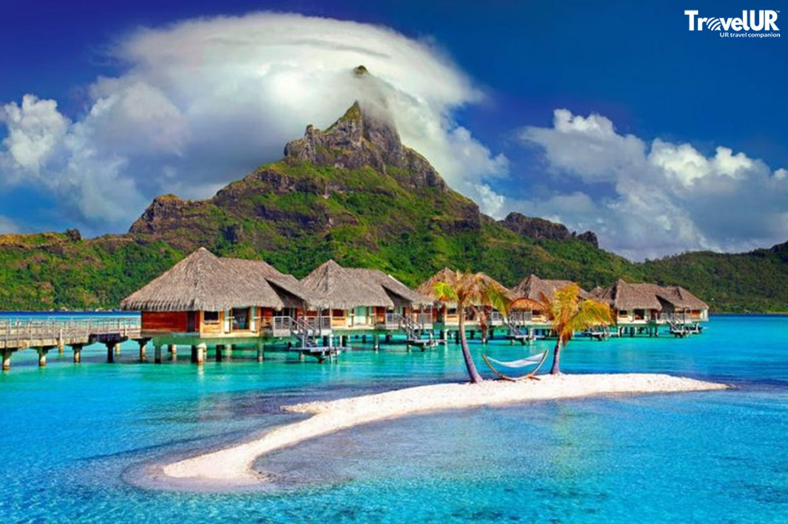
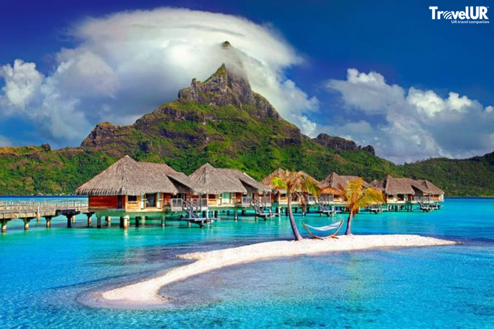

Agatti Island
Agatti Island is known for its stunning coral reefs and turquoise lagoons. Explore the beautiful beaches, indulge in water activities, and enjoy the serene ambiance of this coral paradise.


Agatti Island is known for its stunning coral reefs and turquoise lagoons. Explore the beautiful beaches, indulge in water activities, and enjoy the serene ambiance of this coral paradise.
Kalpeni Island is famous for its white sandy beaches and clear blue waters. Discover the coral atolls, engage in water sports, and witness the vibrant marine life in this tropical haven.

 


Minicoy Island is the southernmost atoll in Lakshadweep, known for its traditional culture and picturesque landscapes. Explore the Lighthouse, engage in water activities, and experience the local Maldivian influence.